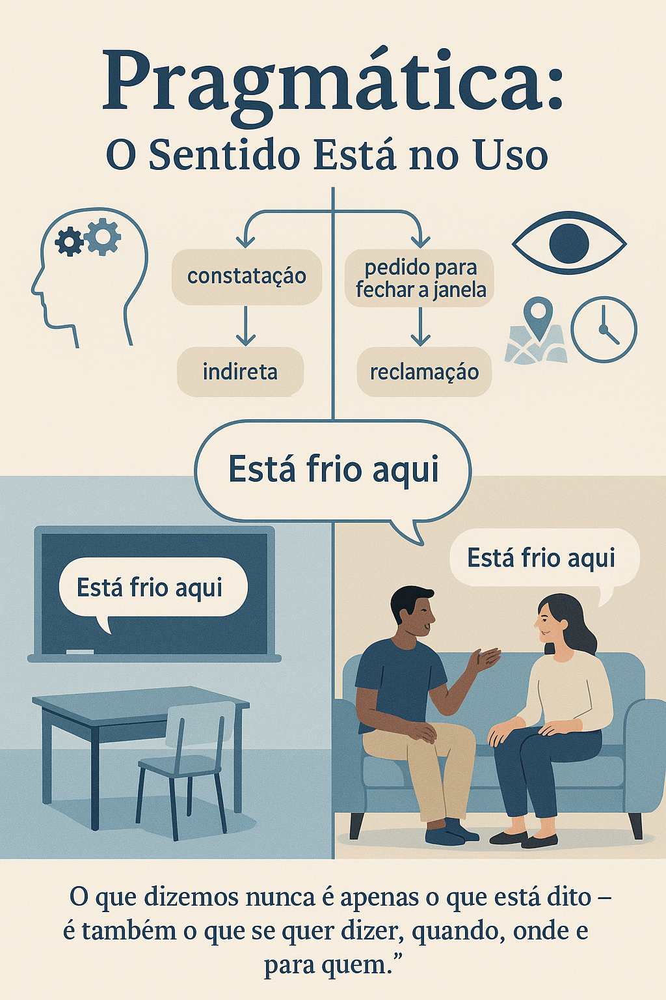

Introdução à Pragmática: O Estudo do Uso da Linguagem em Contexto
A pragmática é um dos ramos da linguística que mais se aproxima da vida real e cotidiana. Ela estuda como os falantes usam a linguagem em situações concretas de comunicação, considerando elementos como o contexto, as intenções dos interlocutores, as implicações não ditas e os efeitos do discurso sobre o ouvinte. Ao contrário de outras áreas que se concentram na estrutura ou no significado literal da língua, a pragmática volta-se para o uso da linguagem e seus múltiplos sentidos possíveis, que variam conforme a situação e o meio social em que os interlocutores estão inseridos.
Enquanto a semântica se dedica aos significados convencionais das palavras e frases, a pragmática se interessa pelos significados construídos na interação entre falantes. Por isso, dois enunciados idênticos podem ter sentidos diferentes dependendo de quem fala, para quem, com que intenção e em que contexto. Como afirma Kanavillil Rajagopalan (2003, p. 98), “a semântica lida com significados convencionais, enquanto a pragmática lida com os significados que emergem do uso”.
Para compreender a pragmática, é fundamental considerar o papel do contexto. Elementos como o local e o momento da fala, o conhecimento compartilhado entre os participantes da comunicação e as normas sociais e culturais envolvidas influenciam diretamente a interpretação do que é dito. Por exemplo, a frase “Está frio aqui” pode ser uma constatação, uma reclamação ou um pedido implícito para fechar a janela, dependendo da situação em que é dita. Kerbrat-Orecchioni (2006, p. 14) lembra que “os enunciados não existem no vácuo; eles são moldados por circunstâncias sociocomunicativas concretas”.A pragmática também nos ajuda a entender fenômenos como ironias, indiretas, humor, pressuposições e implicaturas — todos aspectos que ultrapassam o sentido literal das palavras. Como observa Leech (1983, p. 13), “a pragmática trata da linguagem do ponto de vista de seus usuários, especialmente das escolhas que fazem, das restrições que enfrentam em contextos sociais de uso e dos efeitos que seu uso da linguagem tem sobre os outros”.
Estudar pragmática é, portanto, fundamental para quem deseja se tornar um leitor e um produtor de textos mais consciente e crítico. Essa área da linguística contribui para a análise de discursos políticos, midiáticos, institucionais e escolares, além de aprimorar nossas habilidades comunicativas na vida pessoal e profissional. Mey (2001, p. 6) sintetiza bem essa função ao afirmar que “a pragmática tem por objetivo esclarecer como os seres humanos compreendem e produzem enunciados em interação, levando em conta suas intenções e o conhecimento partilhado”.
Referências
GRICE, H. P. Logic and Conversation. Harvard University Press, 1975.
KERBRAT-ORECCHIONI, Catherine. A enunciação: do sujeito ao discurso. Campinas: Pontes, 2006.
LEECH, Geoffrey. Principles of Pragmatics. London: Longman, 1983.
MEY, Jacob. Pragmatics: An Introduction. Oxford: Blackwell, 2001.
RAJAGOPALAN, Kanavillil. Por uma linguística crítica. São Paulo: Parábola, 2003.